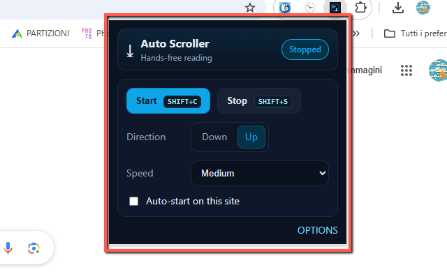
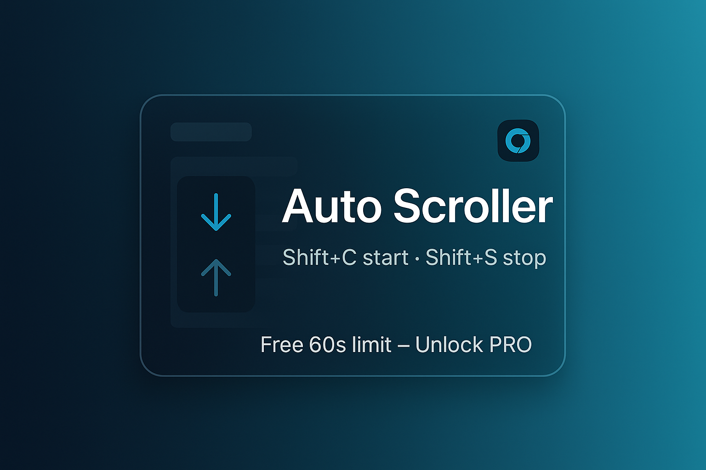

Auto Scroller
Meet Auto Scroller — your hands-free way to browse the web with zero effort. If you spend time reading long articles, scanning social feeds, or monitoring dashboards, this extension keeps your page moving at a smooth, consistent pace so you can focus on content instead of constantly nudging the mouse. Start with a keystroke, lean back, and let the page glide. 🙌
Auto Scroller is built to be simple and reliable. Press Shift+C to start scrolling and Shift+S to stop. Change direction on the fly — down ⬇️ for reading, up ⬆️ when you need to revisit a section — using the same shortcuts or the compact floating button that sits at the bottom-right of every page. Click to play/pause, right-click (or Alt+Click) to toggle direction. It feels natural within seconds and works anywhere you browse: Reddit, X/Twitter, news sites, docs, wikis, and more.
Tune your pace with thoughtfully chosen presets: Very Slow, Slow, and Medium are available out of the box for calm, readable motion. Need to scan faster? Upgrade to PRO to unlock Fast, Ludicrous, and Custom speeds for pixel-perfect control. The free version includes a lightweight 60-second per-start limit (great for casual use), while PRO removes that cap entirely so long reading sessions stay uninterrupted. ⚡
Prefer keyboard workflows? You’re covered. The Options page lets you customize in-page shortcuts (e.g., shift+c, ctrl+alt+j) and choose your default direction and speed. You can also enable per-site Auto-start so your favorite pages begin scrolling automatically as soon as they load — perfect for passive dashboards or daily reading. The UI remains intentionally minimal: a neat badge on the toolbar, a tidy floating control, and settings synced with Chrome so your preferences follow you. 🧭
Auto Scroller is great for content lovers, productivity power users, and accessibility scenarios alike. Writers and researchers can keep their hands on the keyboard while the page moves. Developers can skim logs or documentation at a steady clip. Anyone with repetitive strain concerns can reduce constant scroll gestures. Under the hood, Auto Scroller is carefully optimized to feel responsive — smooth motion, instant start/stop, and quick direction changes without jank.
Getting started is effortless: install, open a page, hit Shift+C, and relax. Want more control later? Pop open Options to tailor shortcuts and defaults. When you’re ready for advanced speeds and unlimited sessions, enter your unlock code in the Options panel to upgrade to PRO. No accounts, no clutter — just a focused tool that makes the web move at your pace. 📖✨
📄 How to Use
- Install the extension from the Chrome Web Store.
- Open any website you want to read hands-free.
- Press Shift+C to start scrolling and Shift+S to stop.
- Use the floating button (bottom-right): click to play/pause, right-click/Alt+Click to switch direction.
- Open Options to customize shortcuts, default direction, speed, and per-site Auto-start.
- Upgrade to PRO in Options to remove the 60-second cap and unlock advanced speeds.
📷 Screenshots


✅ Features
- Hands-free scrolling with instant start/stop (Shift+C / Shift+S)
- Direction toggle on the fly (down ⬇️ / up ⬆️), plus floating button
- Clean speed presets (Very Slow, Slow, Medium); PRO unlocks Fast, Ludicrous, Custom
- Per-site Auto-start and keyboard-first customization
- Lightweight, professional UI with synced settings
- Free version includes a gentle 60-second per-start limit